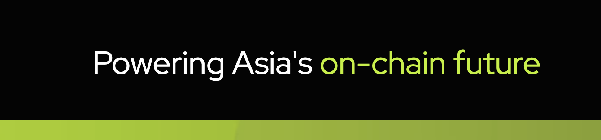
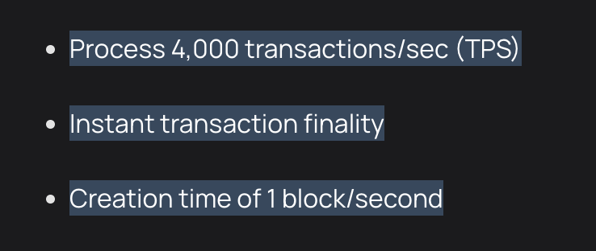
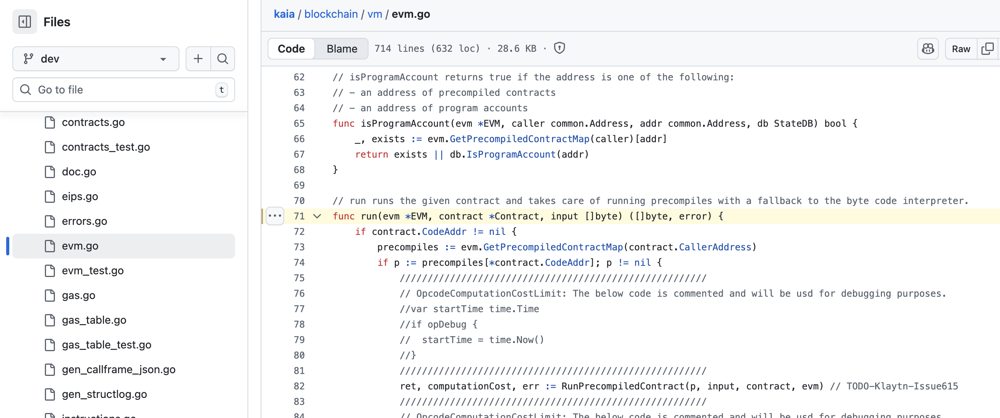
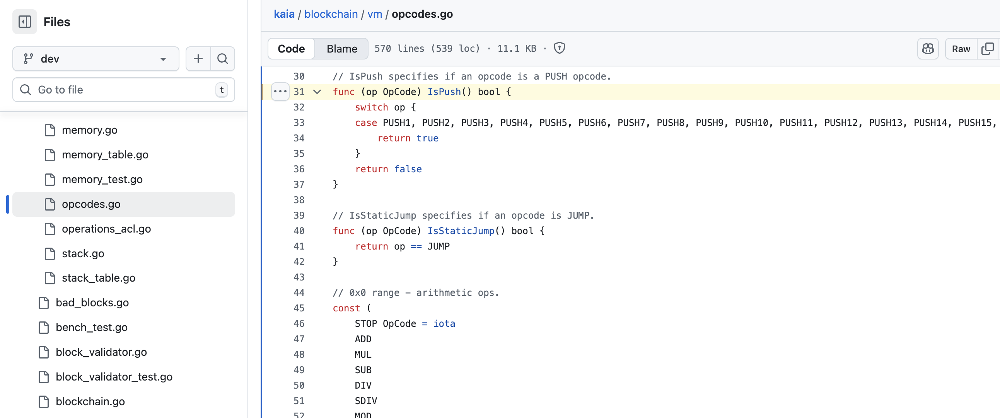
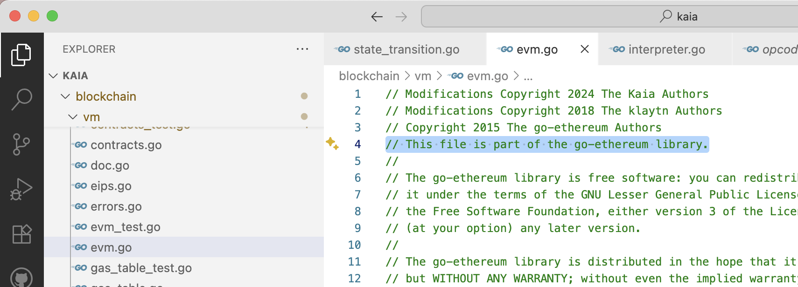
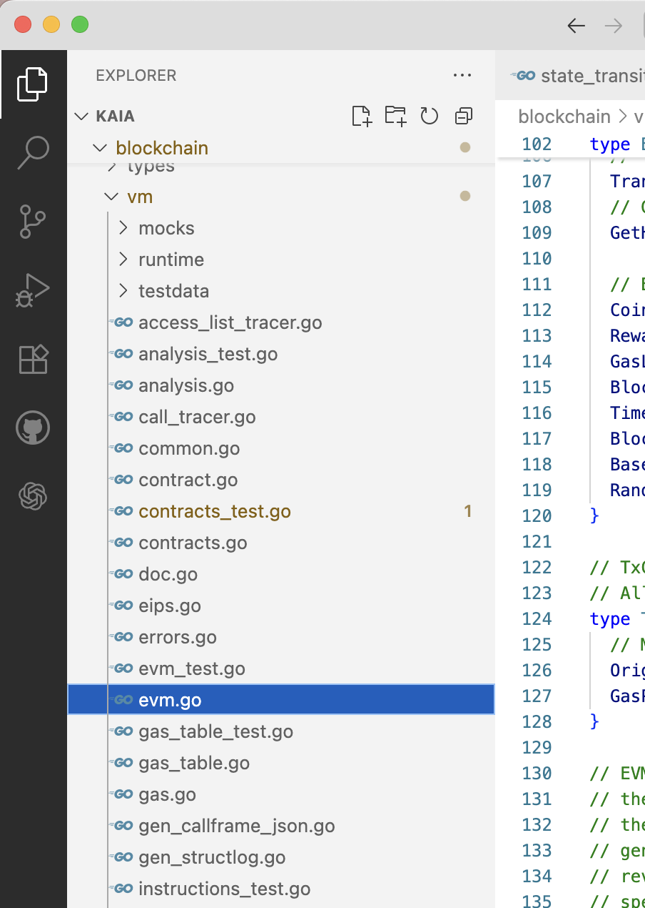
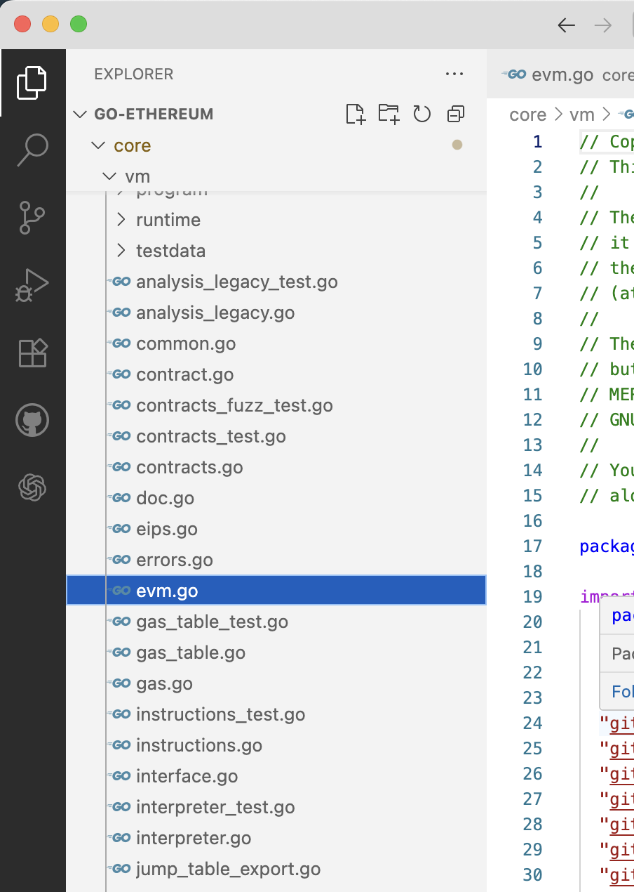

Kaia 是一个和 Line 有合作的区块链项目，首页上的标语竟然是为亚洲的链上生态赋能，难道区块链网络还分地区的吗？
问个小问题，已知 Kaia 是一条 Layer1 的区块链网络，EVM 完备，并且具有以下 3 个特性，猜猜 Kaia 的技术栈是什么？
我自己的猜测是，Kaia 是用 Cosmos SDK + Evmos 方案搭建的一条链。因为 Kaia 的第 1 条特性很眼熟，明显是 Cosmos 链的指标。第 2 条则直接确定了是 PBFT 共识。第 3 条中规中矩。
结果怎么样呢，结果打脸了，Kaia 的技术实力比预期硬核，自己设计了叫 IBFT 的共识，整个链的 节点代码 都是自己开发的，从 6 年前开始就有提交记录了！（不过话说开源了 6 年只有 46 个 star 是怎么回事？）
不得不承认，Kaia 的节点源码很硬核，全部代码都是自己开发的，几乎没有引入外部的依赖。
比如 Kaia 的 文档 中说，Kaia 支持以太坊的智能合约。是怎么支持的呢？一般的链可能会直接用 Geth 的节点，或者至少引用 go-ethereum 的依赖。Kaia 是怎么做的呢？Kaia 自己 实现 了一个 EVM：
在 opcodes.go 文件中能看到完整的 OpCode 的定义：
这不是一件简单的事情！开发一个 玩具 EVM 也许并不难，但是要完全实现 EVM 的特性，做到生产级别可用，真不是一件容易的事情！
就在我惊讶于 Kaia 的硬核程度的时候，我忽然想到什么，再仔细看了一下 Kaia 的代码，注意开头的这句话：
算是一定程度上可以理解了，Kaia 虽然没有以外部依赖的方式引入 go-ethereum，但是把 go-ethereum 其中的代码原文件复制到了项目中，“假装” 是自己的代码。
再来对比一下 vm 相关部分的代码文件，这是 Kaia 的：
这是 go-ethereum 的：
几乎一模一样。这下 “破案” 了。Kaia 要真有实力自己开发一个 EVM，那还真是对不起仓库里的 46 个 star 了。
对于共识部分，我一开始的理解有误。仔细看了一下，其实 Kaia 直接在 文档 里说，自己用了 Istanbul BFT 的代码，Kaia 倒是没有想虚假宣传，我还翻了半天代码。
可以看到整个 Kaia 的节点代码，是 fork 自以太坊的，然后把 Istanbul BFT 集成到了原本的代码中，形成了现在的节点。这种做派，把别人的源码拿过来，改改这个、改改那个、集成一下，有没有一点似曾相识的感觉呢，是不是很像国产的联盟链的风格。
总的来说，Kaia 在技术上没有太多让人眼前一亮的地方，因为最近在亚洲有一些宣讲的会议，我才注意到这个项目。总体感觉是一条中规中矩的链吧，没有技术亮点，应该不会引起市场的关注。